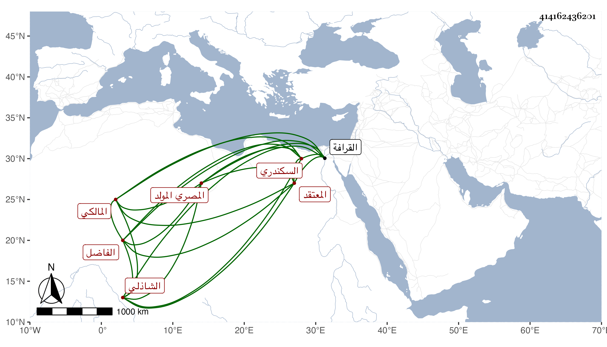

0902Sakhawi.DawLamic.ITO20230111-ara1.EIS1600.414162436201
Biography ID: 414162436201
948
يحيى بن أحمد بن محمد المدعو وفا الفاضل المعتقد أبو السيادات بن الشهاب السكندري الأصل المصري المولد المالكي الشاذلي الماضي أبوه وإخوته ويعرف كسلفه بابن وفا . ولد سنة ثمان وتسعين وسبعمائة وجلس بعد موت أخيه أبي الفتح مكانه في سنة اثنتين وخمسين وتكلم على الناس فرزق القبول وأكثر الناس من التردد إليه للزيارة وغيرها ولكن لم تطل مدته بل مات عن قرب في يوم الأربعاء ثامن ربيع الآخر سنة سبع وخمسين ودفن بمشهدهم من القرافة بجانب أخيه . وكان حسن الصوت في المحراب وغيره ذا نظم على طريقتهم رحمه الله وإيانا .
